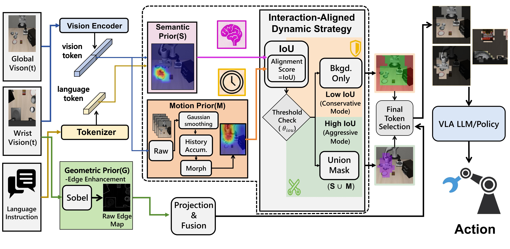
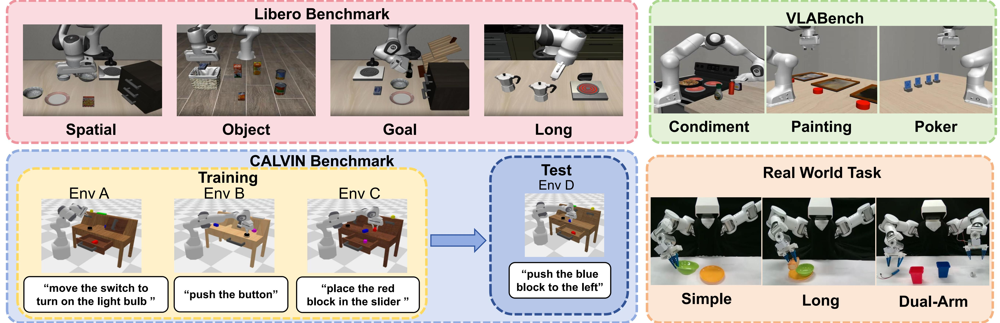
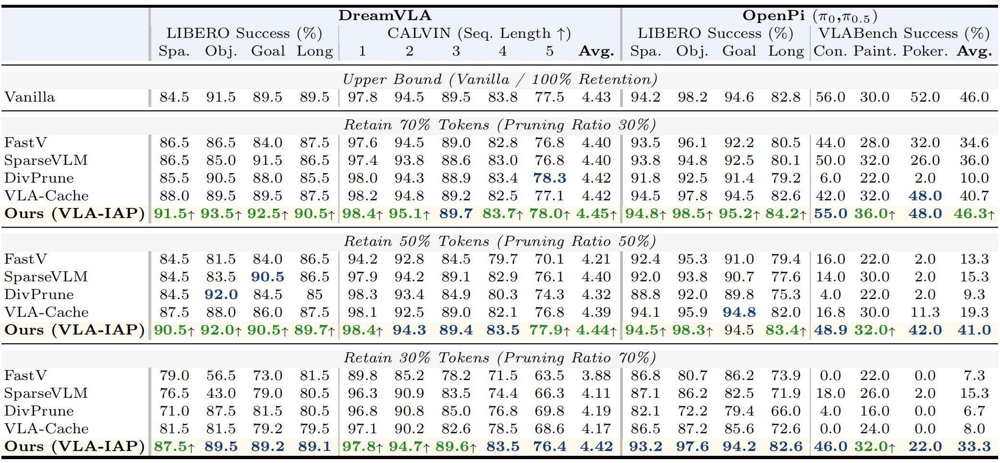
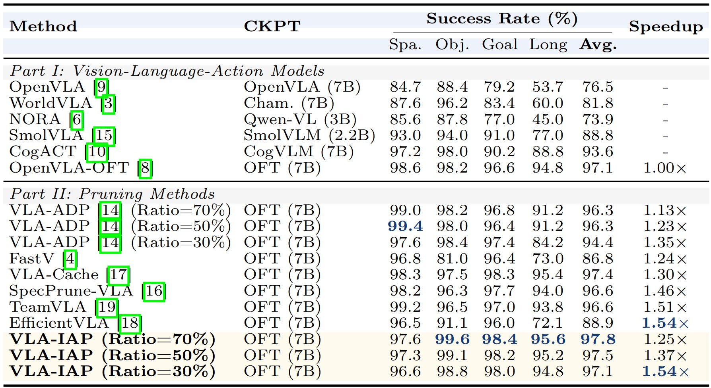
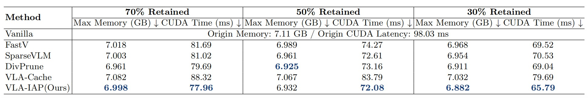

Abstract
Vision-Language-Action (VLA) models have rapidly advanced embodied intelligence, enabling robots to execute complex, instruction-driven tasks. However, as model capacity and visual context length grow, the inference cost of VLA systems becomes a major bottleneck for real-world deployment on resource-constrained platforms. Existing visual token pruning methods mainly rely on semantic saliency or simple temporal cues, overlooking the continuous physical interaction, a fundamental property of VLA tasks. Consequently, current approaches often prune visually sparse yet structurally critical regions that support manipulation, leading to unstable behavior during early task phases. To overcome this, we propose a shift toward an explicit Interaction-First paradigm. Our proposed training-free method, VLA-IAP (Interaction-Aligned Pruning), introduces a geometric prior mechanism to preserve structural anchors and a dynamic scheduling strategy that adapts pruning intensity based on semantic-motion alignment. This enables a conservative-to-aggressive transition, ensuring robustness during early uncertainty and efficiency once interaction is locked. Extensive experiments show that VLA-IAP achieves a 97.8% success rate with a 1.25× speedup on the LIBERO benchmark, and up to 1.54× speedup while maintaining performance comparable to the unpruned backbone. Moreover, the method demonstrates superior and consistent performance across multiple model architectures and three different simulation environments, as well as a real robot platform, validating its strong generalization capability and practical applicability.

Overview of the proposed interaction-aligned dynamic strategy for vision—language action. Given consecutive visual frames and a language instruction, a vision encoder extracts patch features, while three complementary priors are constructed: semantic prior S, motion prior M (via Gaussian modeling, history accumulation, and morphology), and geometric prior G (Sobel-based edge enhancement). The priors are projected and fused, and an IoU-based alignment score is computed to adaptively select background-only filtering or conservative/aggressive masking, producing a union mask (S ∪ M) . After final token selection, the resulting visual tokens are fed into a VLA LLM/policy to generate the robot action.
Experiments
Overall Performance

Figure 1: Overview of qualitative results. Visualization of successful manipulation rollouts across all evaluation environments, including LIBERO, CALVIN, VLABench, and Real-World tasks.
Comprehensive Performance Comparison

Table 1: Comprehensive Performance Comparison. We evaluate DreamVLA, π0 (LIBERO) and π0.5 (VLABench) across multiple benchmarks under varying token retention ratios. Ours (our model) demonstrates superior overall robustness and higher average success rates (↑), especially in complex reasoning tasks.
OpenVLA-OFT Results on LIBERO Benchmark

Table 2: OpenVLA-OFT Results on LIBERO Benchmark. Comparison of VLA models (Part I) and pruning methods (Part II) using OFT (7B) backbone.
Memory and Runtime Analysis

Table 3: Memory and Runtime Analysis of Acceleration Methods on π0 across VLABench. Detailed comparison of maximum GPU memory consumption and CUDA runtime across different vision-token retention rates.
Rollouts of our model
LIBERO
Spatial-Comparison
Object-Comparison
Goal-Comparison
Long-Comparison
Spatial (Baseline)
Object (Baseline)
Goal (Baseline)
Long (Baseline)
Spatial (VLA-IAP)
Object (VLA-IAP)
Goal (VLA-IAP)
Long (VLA-IAP)
VLABench
Add Condiment (Baseline)
Select Poker (Baseline)
Select Chemitry tube (Baseline)
Add Condiment (VLA-IAP)
Select Poker (VLA-IAP)
Select Chemistry tube (VLA-IAP)
CALVIN
Full Sequence
Open Drawer (Baseline)
Lift Red Block (Baseline)
Open Drawer (VLA-IAP)
Lift Red Block (VLA-IAP)
Real-World
Bread Simple
Bread Long (Baseline)
Dual Arm (Baseline)
Bread Long (VLA-IAP)
Dual Arm (VLA-IAP)
BibTeX
@article{YourPaperKey2024,
title={Your Paper Title Here},
author={First Author and Second Author and Third Author},
journal={Conference/Journal Name},
year={2024},
url={https://your-domain.com/your-project-page}
}